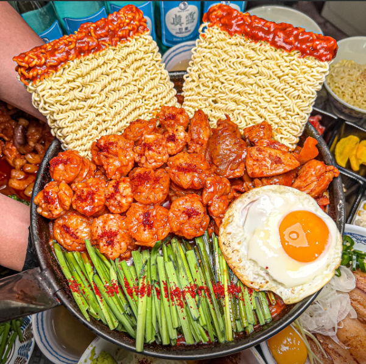

대낚식당
주소: 경기 수원시 영통구 대학1로50번길 21 1층
평점: 4.39(735) 생활의달인 665회 대창덮밥 달인
영업시간: 11:00-22:00

지씨네만두
주소: 경기 수원시 장안구 연무로 42-1 지씨네만두
평점: 4.39(735) 피가 얇고 맛잇음. 쫄면도 추천
영업시간: 9:30-21:00
일,월 휴무

늘이맛콩나물국밥국수
주소: 경기 수원시 영통구 대학로 34 캠퍼스프라자 106호
평점:4.7(283) 가성비가 좋고 국밥,비빕밥이 맛있음.
영업시간 7:00-22:00
일요일 휴무

국수집
주소: 경기 수원시 장안구 창훈로66번길 16-14 신라족발
평점: 4.43(4.5) 칼국수, 국수가 맛있는 가성비 국숫집
영업시간 11:00-17:00
일요일 휴무, 육수 소진 시 조기마감

석기정 돌솥 부대찌개
주소: 경기 수원시 영통구 대학로 34
평점: 4.2(212) 곱창 부대찌개가 고소함
영업시간 11:00-22:00

이한부대찌개닭개장
경기 수원시 영통구 대학1로 42
평점: 4.34(343) 콩불, 닭불 맛집 가성비짱
영업시간 10:00-22:00